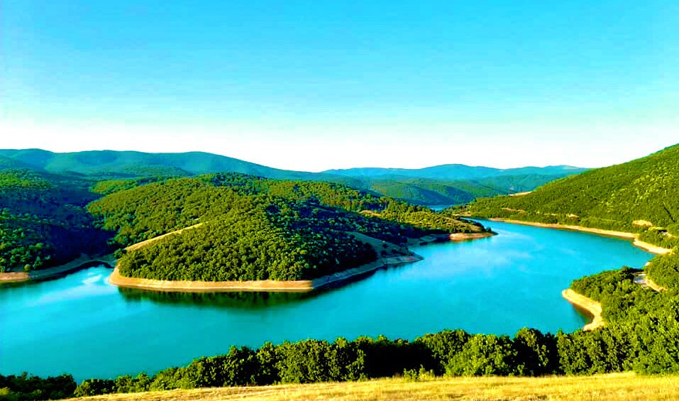

Prishtinë
Parku i Gëmisë

Parku i Gërmisë është një nga destinacionet më të njohura në Prishtinë për natyrë dhe rekreacion. Ky park i madh ofron hapësira për piknik, shëtitje, dhe çiklizëm. Është i rrethuar nga pyje të dendura dhe ka një pishinë të madhe që është shumë e frekuentuar gjatë verës.
Liqeni i Badovcit
Rreth 20 minuta nga qendra e Prishtinës ndodhet Liqeni i Badovcit, një liqen artificial që furnizon qytetin me ujë. Ky vend është ideal për ata që duan të largohen nga zhurma e qytetit dhe të kënaqen me pamjet e qeta dhe të bukura.
Parku Nacional Blinaja
I vendosur në rajonin e Lipjanit, afër Prishtinës, Parku Nacional Blinaja është i njohur për pyjet e tij të dendura dhe biodiversitetin e pasur. Ky park ofron shtigje për ecje, mundësi për vëzhgimin e shpendëve dhe një ambient të qetë për relaksim. Është një vend ideal për adhuruesit e natyrës dhe ata që kërkojnë të eksplorojnë peizazhe të bukura.